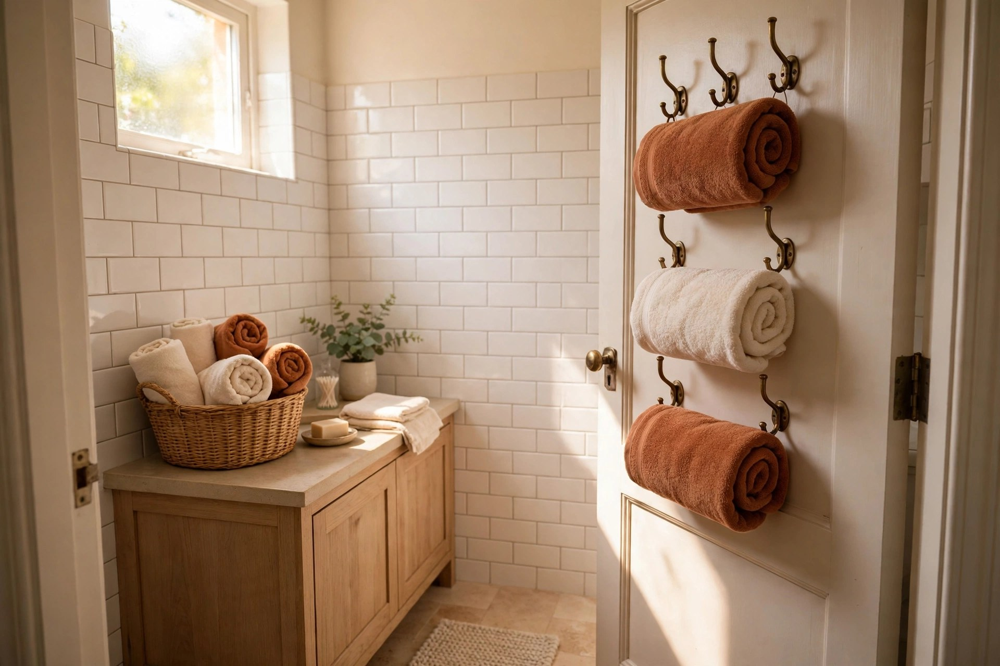

Small Bathroom Storage
Small Bathroom Towel Storage Ideas Without a Cupboard
Intro
Towels are the hardest thing to store in a small bathroom, because there is usually no cupboard at all. They end up on the floor, on the door, or draped over the shower — and the room always looks messy, however clean it is.
This guide has 12 towel storage ideas that need no cupboard. Each one lists what it costs, and most need no drilling — hooks, rails and baskets do the job. All are renter-friendly. Towels dry best when they hang flat with air on both sides — so every idea below keeps air moving around the towel.

1. A ladder rack leaning on the wall — $20–$30
A leaning ladder rack stands against the wall and holds three or four towels on its rungs, with no fixing at all. It needs only a little floor space, and it looks like furniture rather than storage. Hang the towels you use most at hand height.
2. Hooks behind the door — $5–$10
An over-door hook rail holds two or three towels behind the bathroom door — space that was completely empty. Over-door hooks need no drilling and come off without a mark. Use one hook per towel, so they dry properly. Keep the rail at shoulder height, so towels do not drag on the floor.
3. Rolled towels in a basket — $8–$12
Roll towels instead of folding them, and stand them upright in a basket on the floor or on a shelf. Rolled towels take up less space, look like a hotel, and you can see every towel at a glance. One basket holds four rolled towels.
4. A towel rail above the toilet — $8–$12
A towel rail fixed high on the wall above the toilet holds two rolled towels, always within reach. It costs a few dollars, takes ten minutes to fit, and uses space that was completely empty. Roll the towels so they look neat.
5. A heated towel rail that dries as it stores — $30–$45
A small heated rail dries towels between uses, so they never smell damp — and it stores them too. Plug-in models need no plumbing and can be fixed with adhesive. One rail holds two large towels. A timer plug switches the rail off after two hours, so it never runs all day.
6. A shelf above the door — $10–$15
A short shelf above the bathroom door holds spare towels in a basket, out of the way but easy to reach. It uses the highest, emptiest strip of wall in the room. Keep only spares up there, not daily towels.
7. Rings instead of a rail — $5–$8 each
Towel rings take up far less wall than a rail, and one ring per towel means towels dry faster. Two rings beside the sink cost about $10 and look neater than one long rail. Fix them with adhesive pads if you rent.
8. A basket on the windowsill — $6–$10
A shallow basket on a wide windowsill holds two rolled hand towels and a small plant. The window light keeps the towels fresh, and the basket hides the clutter. Choose a basket that fits the sill exactly, so it cannot fall.
9. A towel shelf over the radiator — $12–$18
A small shelf that clips over the radiator holds towels where they dry fastest. The warm air dries them between uses, and the shelf costs less than a heated rail. Keep towels folded flat, so air can reach them.
10. A hanging fabric shelf in the wardrobe — $8–$12
If the bathroom has no cupboard, use the bedroom wardrobe. A hanging fabric shelf holds four folded towels in separate compartments, away from the damp. Keep one towel in the bathroom and the spares in the wardrobe.
11. A stool that stores towels — $15–$25
A small lidded stool in the bathroom holds two folded towels inside and works as a seat or a side table. It costs less than a cabinet and fits in a corner. Choose a waterproof lid, or the towels will get damp.
12. One towel per person, on a named hook — $0
The cheapest idea costs nothing. Give each person one hook, and one towel each. When every towel has a place, towels stop piling up on the floor. Label the hooks with a small tag, and the system keeps itself.
Conclusion
Towels do not need a cupboard — they need a hook, a rail, or a basket, and one place each. A ladder rack, hooks behind the door, and a basket of rolled towels can store a whole family's towels for under $40, without drilling a single hole. Start with one hook per person, and the floor will stay clear.
Budget recap
- Leaning ladder rack: ~$25 - Over-door hooks + towel rings: ~$12 - Basket for rolled towels: ~$10
Total for a complete towel setup: ~$47 — or ~$12 if you start with hooks and a basket.
Pinterest pin titles
- ""Small Bathroom Towel Storage Ideas Without a Cupboard""
- ""No Cupboard? 12 Towel Storage Ideas for Small Bathrooms""
- ""12 Towel Storage Ideas That Need No Cupboard at All""